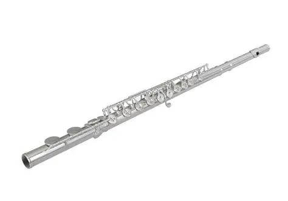

What is a Flute?
The flute is a musical instrument from the woodwind family. Unlike other woodwinds that use a reed, the flute produces sound when the player blows air across an open hole. This is called an edge-blown aerophone. The air vibrates inside the tube and creates a soft, clear sound. The modern flute is usually made of metal, but it is still called a woodwind because its ancestors were made of wood.

Parts of the Flute
The flute has three main parts:
Headjoint
The headjoint is the top part. It has the lip plate where the player blows. Inside is a plug called the crown that helps tune the flute.
Body
The middle part has most of the keys. When the player presses the keys, they open and close holes to change the pitch.
Footjoint
The footjoint is the end of the flute. It has a few keys for the lowest notes. Some flutes have a B footjoint for an extra low note.
Types of Flutes
The flute family includes many different sizes and pitches. Here are the most common ones:
Concert Flute
The standard flute in C. It is about 67 cm long and is the one most people play. Range: middle C to three octaves higher.
Piccolo
Half the size of a concert flute. It plays the highest notes in an orchestra. Sounds one octave higher than written.
Alto Flute
Larger and lower than the concert flute. It is in G and has a mellow, warm sound. Often used in flute choirs.
Bass Flute
Even larger, in C one octave lower. The headjoint is curved so the player can reach. Very deep and rich sound.
How the Flute Makes Sound
When you blow across the mouth hole, the air splits and vibrates inside the tube. This creates a standing wave. By opening and closing the keys, you change the length of the air column, which changes the pitch. The flute can play very soft and very loud. It can also play fast runs and gentle melodies. The sound is pure and sweet, which is why the flute is often used to represent birds and nature in music.
Materials
Modern flutes are made from different metals:
- Nickel Silver: An alloy of copper, zinc and nickel. Most student flutes are made from this. It is durable and affordable.
- Silver: Professional flutes are often made from solid silver. It gives a darker, richer sound.
- Gold: Some professional flutes use gold. It has a very warm and complex tone.
- Platinum: Very rare and expensive. Used by top soloists for a powerful sound.
- Wood: Some players still use wooden flutes for Baroque and folk music.
The Flute in Music
The flute is used in many kinds of music. In orchestras, there are usually 2 to 4 flutes and one piccolo. They play melodies and harmonies. In chamber music, the flute is part of the woodwind quintet. In jazz, famous players like Herbie Mann and Hubert Laws made the flute popular. In folk music, many cultures have their own flutes. The flute is also a solo instrument, with many concertos written for it by composers like Mozart, Nielsen, and Ibert.
Did You Know?
• The flute is one of the few instruments that has not changed much in 150 years. The Böhm system from 1847 is still used today.
• The oldest playable flutes are over 9,000 years old and were found in China. They are made from bone.
• The flute can play over three octaves. Only a few wind instruments can do that.
• In an orchestra, the flutists often play piccolo as well. It requires a different embouchure (mouth position).
• The word "flute" comes from the Latin "flare", which means "to blow".